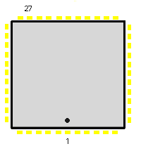

|
|
8.2.3 TT 5380 SCSI Controller
Atari TT SCSI Controller
TT Serie 5380 44 Pin SMD SCSI Controller (TT only)
Pin Signal Typ Beschreibung
_______________________________________________________________________________
1 NC
2 DB0
3-10 DB7-DB0- I/O Datenbus
11 DBP-
12,13 GND Input Signalmasse
14 SEL- I/O SCSI SEL_
15 BSY- I/O SCSI BUSY
16 ACK- I/O SCSI Acknownledge
17 ATH- I/O SCSI ATH
18 RST- I/O SCSI Reset
19 I/O- I/O SCSI I/O
20 C/D-
21 MSG- I/O SCSI MSG
22 REQ- I/O SCSI MSG
23 nc nicht belegt
24 CS- Input Chip Selekt
25 DRQ
26 IRQ
27 IRQ-
28 READY I/O SCSI Ready
29 DACK-
30 EOP-
31 RESET- Input Setzt den Controller auf einen definierten
Ausgangszustand
32 IOW-
33 A0 Adressleitung A0
34 nicht belegt
35 Vdd
36,37 A1-A2 Adressleitung A1 und A2
38-44 D7-D0 Datenbus/ CPU Bus
_____________________________________________________________________________
 Abbildung 1 - 5380 PLCC SCSI Controller
|
|
|